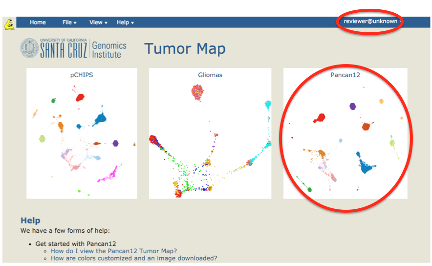
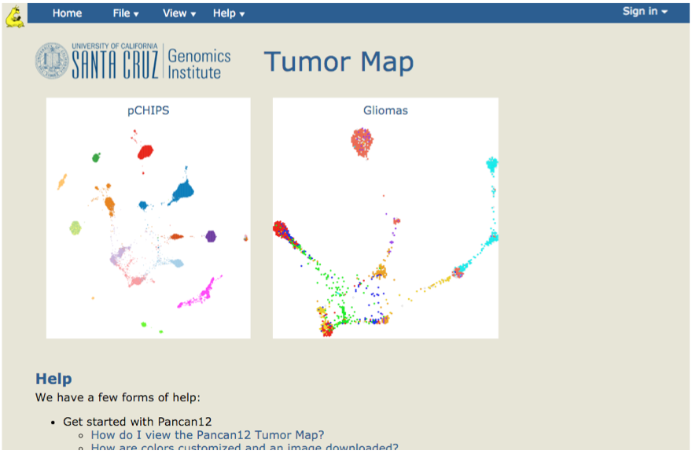
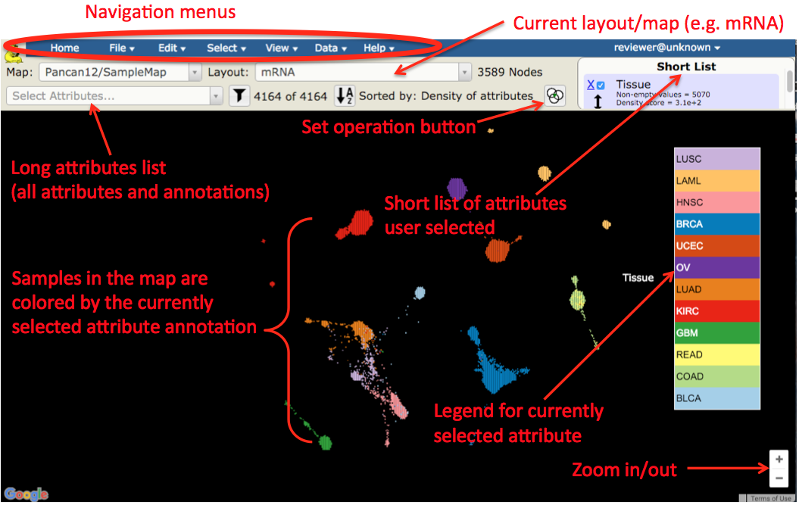

Objective:
Access UCSC Tumor Map home page and open the Tumor Map tool for Pan-cancer12 dataset.
Skills Covered:
- Access Tumor Map home page.
- Sign into Tumor Map for Pancan12 project.
- Access Tumor Map for Pancan12 project.
Steps:
- Go to https://tumormap.ucsc.edu/

- Explore the links and items on the home page

- Click Sign In and enter your authentication credentials
- Click on Pancan12 map
- Observe and explore the map that opened up and controls available in the Tumor Map tool
